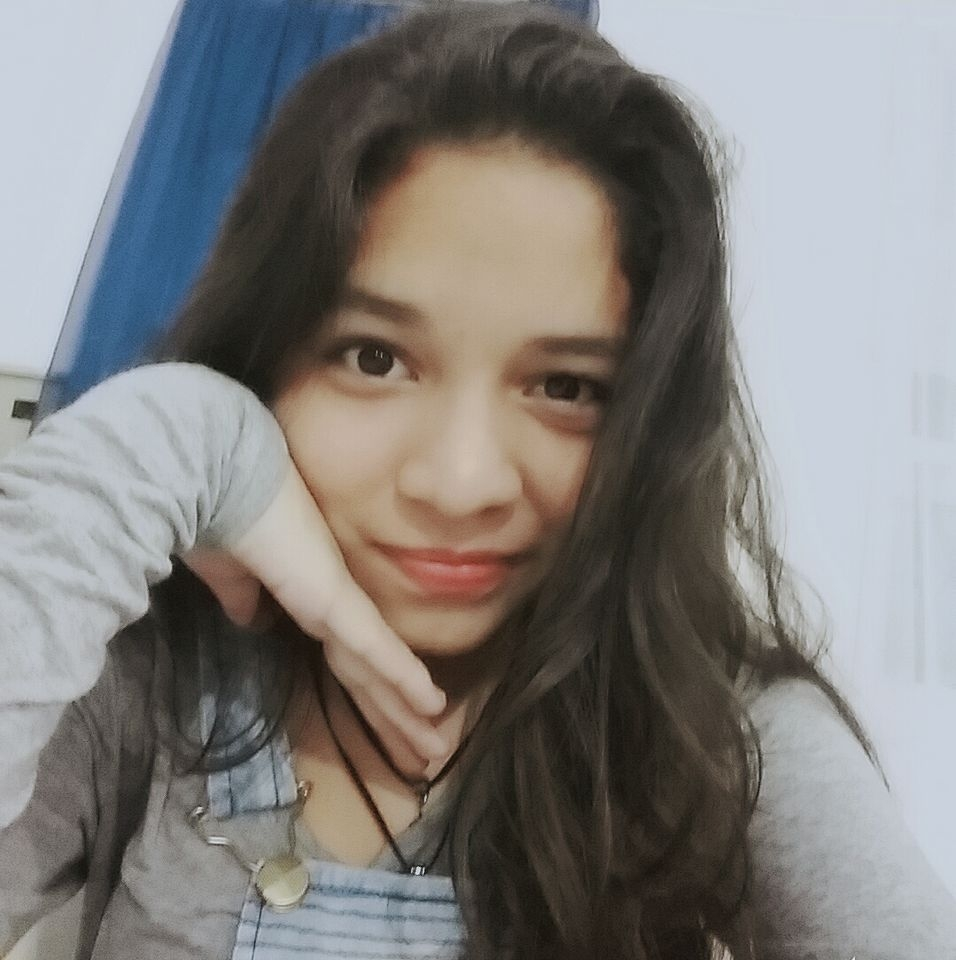
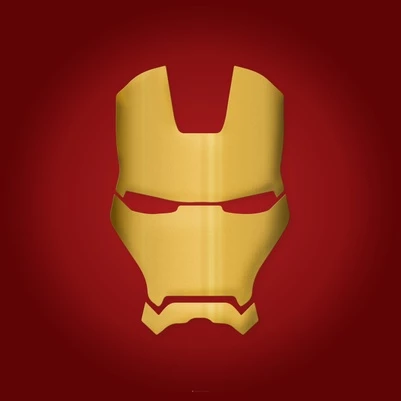
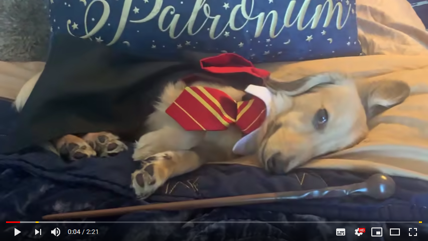
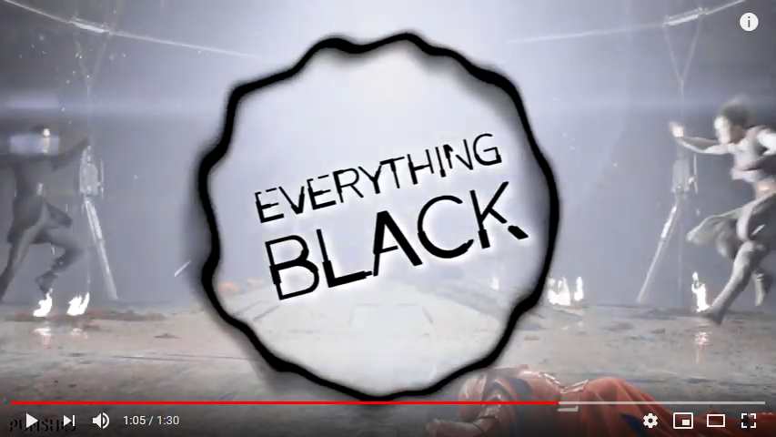

Curriculum Vitae
Alycia Vitoria Gomes da Gama

Endereço, email e contatos
Rua Rio Branco 63, São José Operário - Manaus,AM - Brasil
Nascimento: 30 de juho de 2002
Telefone: +55 92 99222-7893
Email: alyciagomess@gmail.com
Qualificações Academicas
• Ensino Médio (incompleto)
FMM - Fundação Matias Machline
Manaus, AM - Brasil
2017 - Presente
• Ensino Fundamental
EEDJDR - Escola Estadual Dom Jacson Damasceno Rodrigues
Manaus, AM - Brasil
2013 - 2016
Histórico de Experiencia Academica
--------------------------
Histórico de Experiencia Profissional
--------------------------
Idiomas(spoken,written,reading)
English(intermediário,intermediário,intermediário)-
FMM
Portuguese: Native
Membership
---------------------------
Outras Àreas de Interesse
• Informática (criação de projetos web e mobile)
• Cinema (Atuação, Produção e Roteirização)
• Medicina Veterinária (Clínica de Animais Pequenos)
• Praticante de FlagFootball
Maior ato de coragem
Qual foi o ato de coragem?
Gazetar aula na época do fundamental
Quando foi o ato de coragem?
Entre 2014-2016 (do sétimo ao nono ano)
Como foi o ato de coragem?
Eu de vez em quando fugia da escola apenas pra andar pelo meu bairro,
que é relativamente perigoso(e já fui ate assaltada nessas saídas que eu fazia)
Quais habilidades utilizou para realizar o ato de coragem?
Pular muro e distrair pessoas
Maior medo em vida
Porque tem esse medo?
Não sei, sempre me acompanhou... Esse medo do desconhecido,
seja uma pessoa desconhecida, um lugar desconhecido... Tudo (sobrenatural, ETS)
Descreva o dia que mais teve sorte na vida
Quando eu tava no primeiro ano do ensino médio, eu era muito ruim em exatas
(matemática, física e programação), entao devido á essa dificuldade eu acabei reprovando e saindo da fundação.
Porém, no ano seguinte(2018) recebi a notícia de que eu tinha sido repescada, ou seja, voltaria pra fundação já no segundo ano,
e de tantos que reprovara, eu fui uma das escolhidas, e hoje, estou concluindo meu ensino médio de informática.
Esse com certeza foi meu maior dia de sorte na vida.
Gosta de animal de estimação? Descreve-os, referencie
suas raças em sites web
Sim, bastante. Eu tenho apenas um cachorro que se chama Bethoven, ele é um chow chow preto
e bastante bravo, porém brincalhão e muito fofo. Ele está pra completar 2 anos de idade
Qual seu time do coração? Quando começou a torcer para tal?
Referencie o nome do seu time com o site oficial dele
Não torço pra nenhum time
Voce tem heróis? Quem seria? Porque gosta tanto dele?

Sim. Gosto muito do homem de ferro, pois mesmo não tendo poderes, ele salva o mundo
utilizando sua maior aliada, sua inteligencia... Um dia quero chegar no nível do homem de ferro
Informe algumas músicas favoritas suas
Tame Impala - The Less I Know The Better
Pham - Movements
Bishop Briggs - River
Informe alguns vídeos do youtube favoritos seus


Voce tem sonhos? Pode enumerar alguns?
Sim. Quero viajar o mundo todo, conquistar minha casa, meu carro, minha independencia
Em relação a FMM, porque escolheu o curso de Informática?
Em os tres(mecatronica, eletronica e informática) era o que eu mais conhecia e eu tambem
sempre quis fazer um curso de informática
Fique a vontade para acrescentar informações, se preferir
Eu namoro a 4 meses o Cristian Aragão, estamos juntos desde novembro de 2018,
eu sou potterhead (fã de harry potter), gosto mt de star wars tbm, amo cachorros... Minhas matérias favoritas são biologia e química,
tenho 3 irmãos, 1 menina e 2 meninos, meu pai faleceu em 2008 e hoje vivo com a minha mãe e meu padrasto